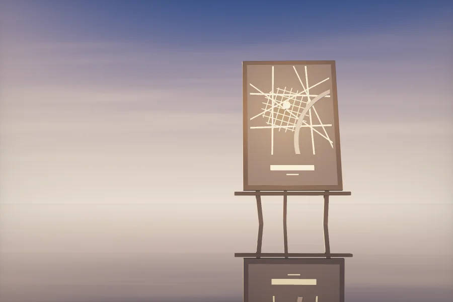
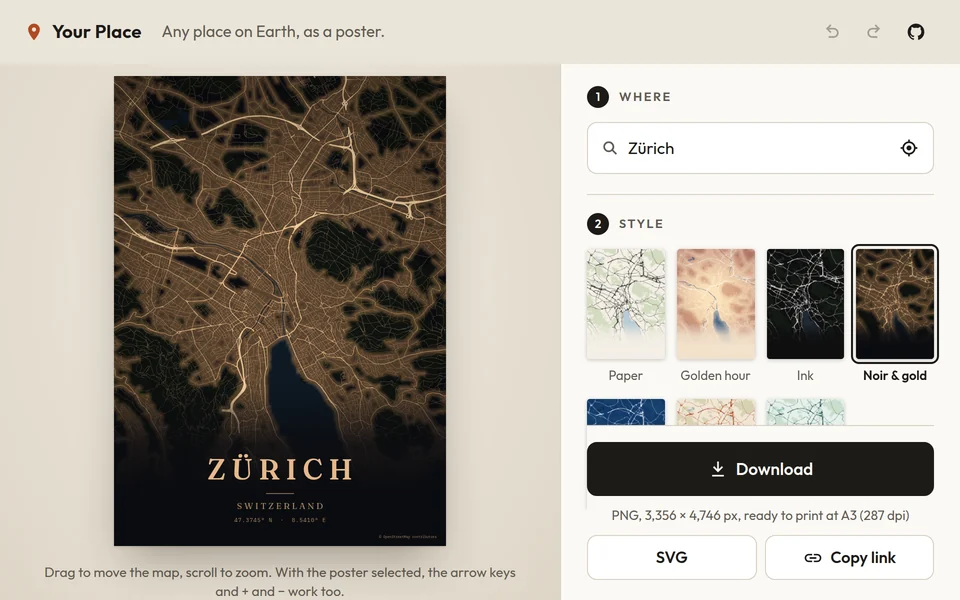

product · about 3 min · The Product Archipelago
Your Place
Any place on Earth as a poster. Type a town, a street or an address, pick a style, and download a file ready to print, drawn from OpenStreetMap.
The problem
A poster of a place that matters is a favourite gift, but the free tools are command-line scripts and the easy ones charge.
Evidence
62 unit tests and 12 end-to-end scenarios on a desktop and a phone, drawn from real OpenStreetMap tiles of Zürich. Measuring took the first poster from 41.7 s to 0.39 s. Read its tests

What it does
- Finds any city, street or address, and starts near you, guessed from your time zone
- Seven styles, each previewed on your own place, framed by dragging, pinching or the keys
- Downloads a print-ready PNG or an SVG with its fonts inside; the link is the poster
The most interesting decision
Draw the map off the main thread, and never make a drag wait for it
A worker paints on an OffscreenCanvas while the page re-projects the last picture to wherever the map has moved, so the streets follow your finger at once and the fresh paint drops in behind. Measuring found the slow part: Chromium’s Path2D.closePath() grows with the path, and skipping it took 90,000 buildings from 85 s to 77 ms.
Built with
- React 19 + TypeScript (strict)
- Vite
- Web Worker + OffscreenCanvas
- OpenMapTiles vector tiles
- Canvas + SVG from one geometry walk
- Vitest + Playwright + axe